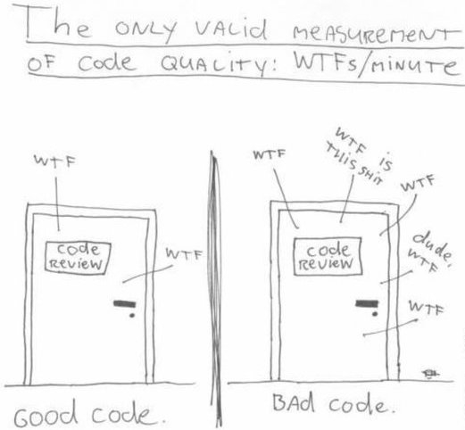

Chapter 10 Standards
10.1 Standards for Peer review

An important element of getting quality code is peer review. Showing people your code and getting it scrutinized is an essential part of ensuring that code is doing what it is supposed to do. It also allows for iteration, a process where the back and forth of reviewing code cleans and sharpens it. This process is made easier by coding standards. When code is written in a familiar style it will be easier for others to pick it up quickly and understand what was your intention. Poorly written code may achieve the desired output but is usually difficult to read and follow, making it hard to scrutinise and quality assure. This increases the likelihood that it will contain errors or have unforeseen side effects.
A common language aids this as a business area which uses Excel, R, SAS, SQL, Scala, SPSS and Python will struggle to maintain effective peer review because of the number of different coding platforms in use. It is advantageous to consider a wider peer review, where people outside your team review your code. This can be challenging, depending on the systems in use and the sensitivity of your data. However code itself is usually not sensitive, and it is recommended that code is shared and scrutinised widely to increase robustness and promote transparency. Using dummy data or synthetic data which has the same structure and patterns as the actual data but has been randomly generated is one way to enable peer review from those who do not have access to the data.
Departments or business areas might find it useful to have standards for peer review. This could involve a checklist of common things issues or a procedure to follow. An example is provided by ropensci. A peer review template might be useful for encouraging a unified approach and ensuring that important checks don’t get missed.
10.2 Standard Structures for Projects
For projects of a similar type a standard structure might be useful. This would allow users to pick up projects quickly as they would have a general idea of the layout. For example you can look at Cookiecutter Data Science. This would aid in peer review as it would be possible to get analysts outside of your team to review your code, without them having to understand a unique structure. It might be that there is a better good practice structure that departments could encourage by having or adopting a standard. It would also allow projects to start faster as the standard could be copied, and then modified to fit the project as needed.
10.3 Dependency Management
Packrat / Docker